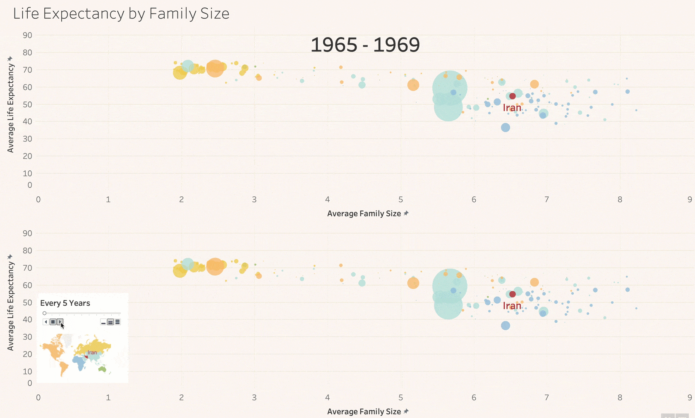
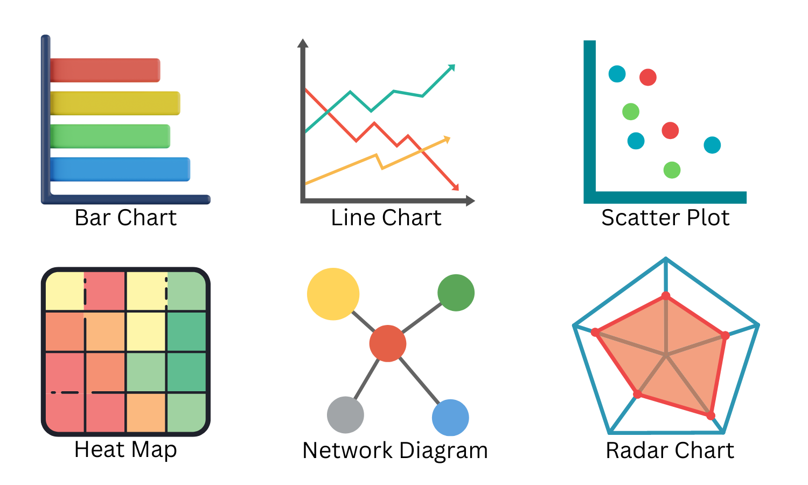
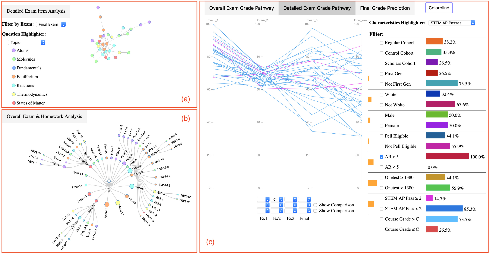

Power of Data Viz
Foundations Module 2: A conceptual Overview
Welcome to Foundations of Learning Analytics
Foundations of Learning Analyticsare designed for those seeking an introductory understanding of learning analytics and either basic R programming skills or basic Python skills, particularly in the context of STEM education research.
It consists of consists of four modules. Each module of the Foundation of LA includes:
- Essential readings
- Conceptual overview slidedeck
- Code a-long slidedeck
- Case study activity that correlates with the Learning Analytics workflow
- Optional badge activity
Module 2 Objectives
By the end of this module:
- Fundamentals of Data Visualization:
- Learners will grasp the basic concepts and significance of data visualization in distilling complex educational data into comprehensible and actionable insights.
- Variety of Visualization Techniques:
- Participants will be able to identify and apply different types of visualizations, such as charts, graphs, and heatmaps, to represent educational data effectively.
- Practical Application and Best Practices:
- Learners will gain insights into real-world applications of data visualization in education and learn best practices to enhance the clarity and impact of their visual data presentations.
Essential readings:
- Learning Analytics Goes to School, (Explore, Ch. 3, pp. 43 - 49) By Andrew Krumm, Barbara Means, Marie Bienkowski
- R for Data Science, (Ch. 3 & 7) by Hadley Wickham & Garrett Grolemund
- SKIM: Data Visualization: A practical Introduction (Ch. 1 & 3) by Kieren Healy
- Optional Readings on data Viz in folder By Nagaria & Velan S., 2022; and Wongsuphasawat et al., 2016
What is Data Visualization?

Benefits of Visualization
- Enhancing Understanding
- Promoting Engagement
- Informing Decision-making
- Strengthening Communication
COMMON TYPES OF DATA VISUALIZATION

Visualization in Practice
Student performance data from an introductory chemistry course (Deng et al., 2019)

Best Practices
- Know your audience
- Simple designs
- Correct visualization
- Provide context
- Use color strategically
- Iterate and refine
What’s Next?
- Complete the
Exploresection of the Case Study - Complete the
Badge requirementFoundations badge - Data Sources - Do
essential readingsfor the next Foundations Module.